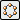
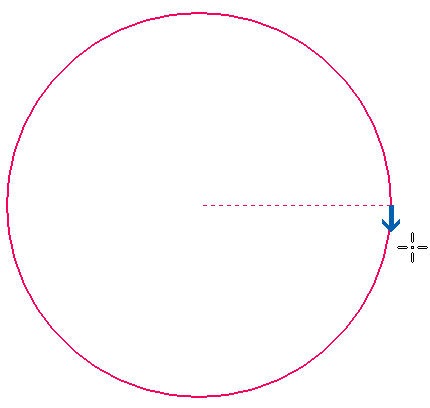
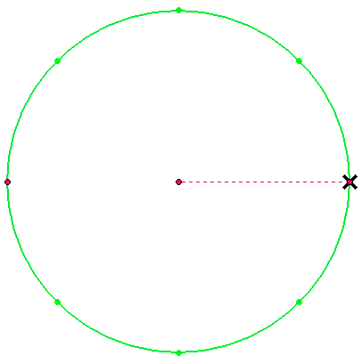

Construct an ordered circular pattern feature
-
Choose the Home tab→Pattern group→Pattern command .
-
Select one or more features to pattern, and then click the Accept button on the command bar.
Note:You can also pattern sketches. Click here to learn how to create a 2D circular pattern of sketch elements.
-
Define the plane you want to arrange the pattern on.
A profile true view is displayed so you can draw the pattern profile.
-
Choose Home tab→Features group→Circular Pattern

. -
On the command bar, in the Count box, enter the total number of pattern instances that you want to create. This includes the initial feature that you selected for creating the pattern.
-
Click for the center point of the circular pattern.
-
Click to specify the radius (start point) of the pattern circle.
-
Click to specify the direction for placing the pattern along the circle.


-
Click Close Sketch.
-
In the Assembly environment, select parts that you want to include in the pattern.
-
Finish the feature.
-
You can select the features you want to pattern before clicking the Pattern command. The command automatically advances to the Plane or Sketch step.
-
You can also pattern edges, sketches, surfaces, and design bodies.
-
You can also construct pattern features in the Assembly environment using the Pattern Assembly Feature command.
How do I
Construct an ordered rectangular pattern featureCreate a 2D rectangular pattern of sketches
Create a 2D circular pattern of sketches
Construct a Fast Pattern
Construct a Smart Pattern
Define the pattern plane
Learn more
Pattern featuresRectangular Pattern (ordered)
Circular patterns
Look up more details
Pattern command (ordered)Rectangular Pattern command bar (ordered sketch)
Circular Pattern command bar (ordered sketch)
Pattern command bar